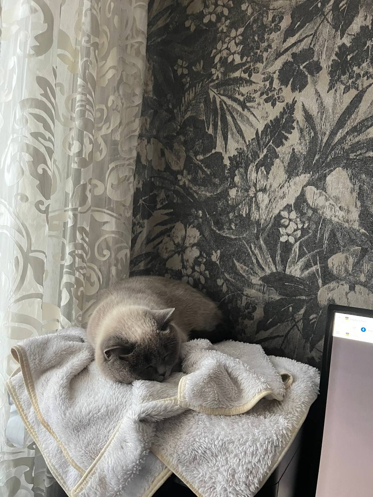
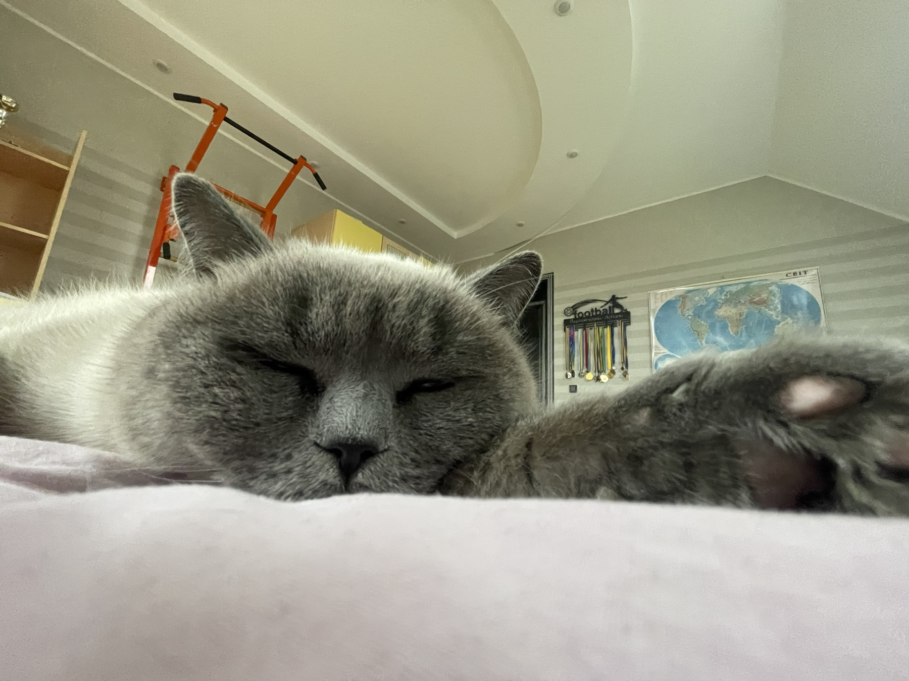
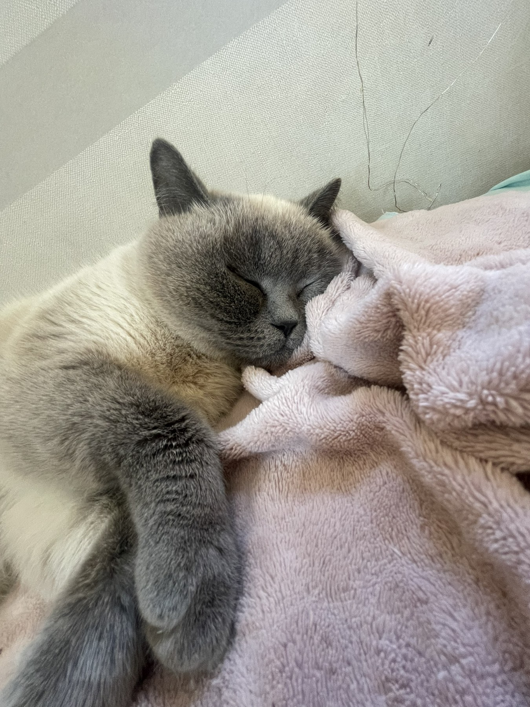
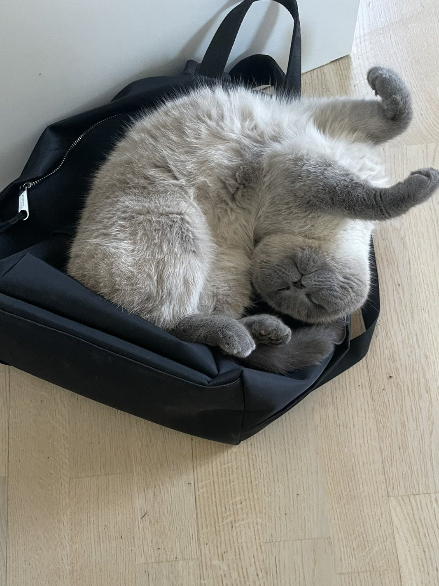
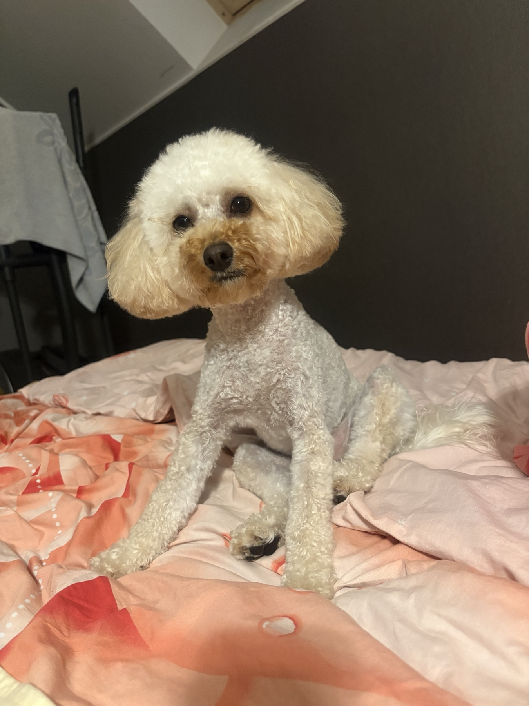
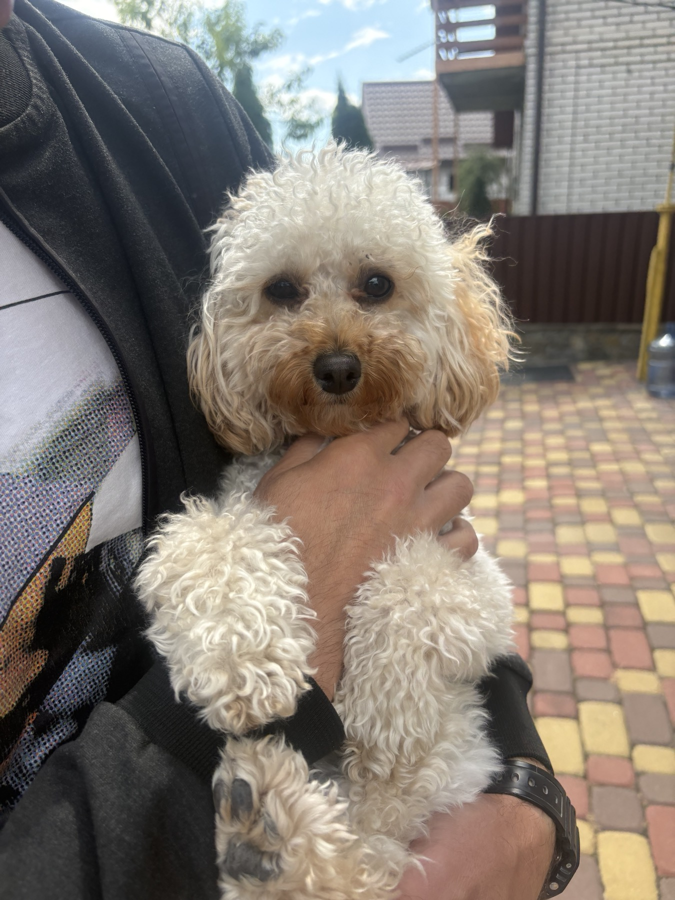
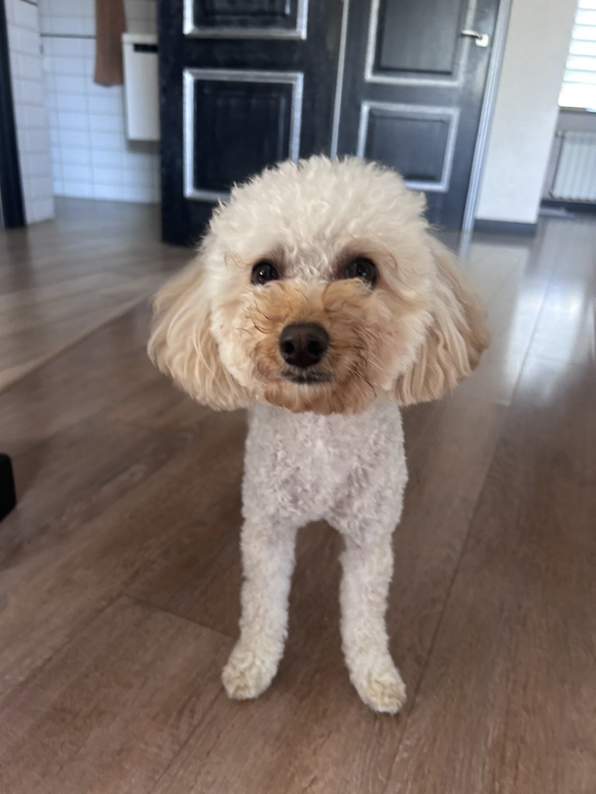
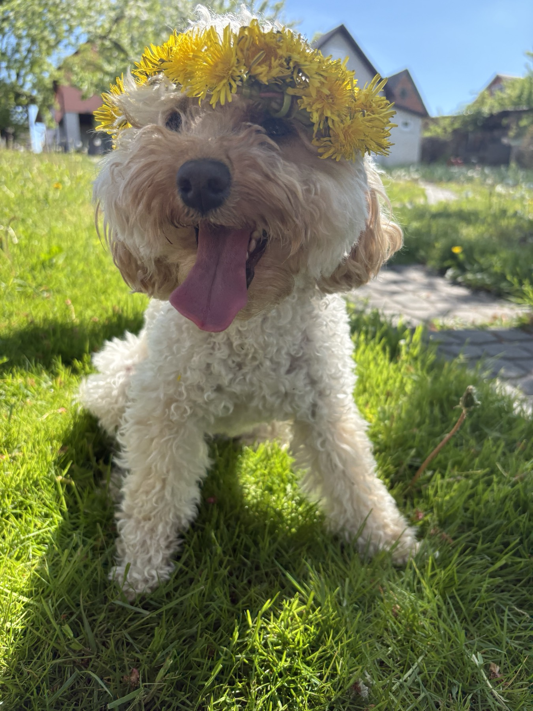

Буся — моя чарівна чорно-біла кицька. Вона дуже спокійна та мовчазна, адже майже ніколи не нявкає. Схоже, вона вирішила, що мовчання — це справжнє мистецтво!
Найбільше Буся любить спати. Але в неї є одне особливе улюблене місце — мій рюкзак. Вона може вмоститися на ньому й солодко заснути, зовсім не турбуючись про те, що мені потім доведеться збирати з нього цілу купу шерсті.
Попри свою любов до сну та рюкзаків, Буся — чудова кицька, яка додає затишку нашому дому. Вона справжня королева відпочинку, і здається, що її головна життєва мета — спати якомога більше!




Бетті — моя руденька та дуже активна собачка. Вона обожнює гуляти, досліджувати навколишній світ і знаходити для себе нові пригоди. З нею точно не засумуєш, адже вона завжди готова до прогулянки!
Але є в Бетті ще одна велика любов — їжа! Вона настільки любить смачно поїсти, що іноді намагається поцупити щось зі столу. Варто лише відвернутися, як Бетті вже може зацікавитися чиїмось обідом.
Бетті — справжня непосида та маленька хитрунка. Вона дарує багато веселих моментів і завжди піднімає настрій. Її можна сміливо назвати головною шукачкою пригод і любителькою смаколиків у нашому домі!



